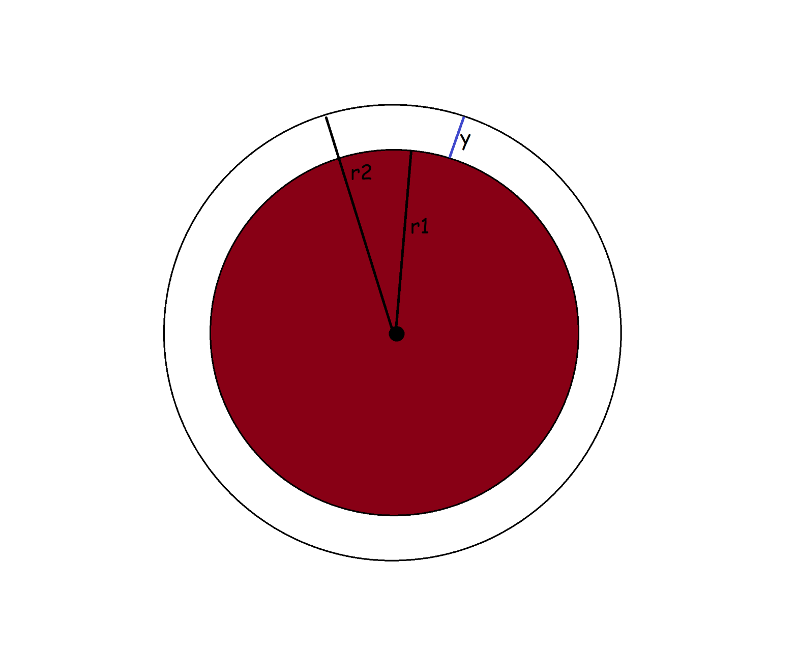
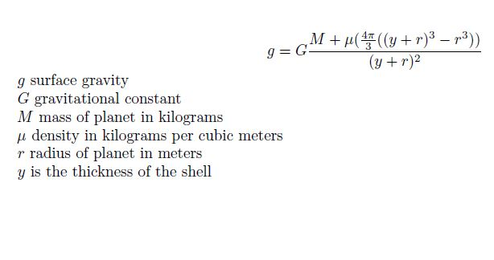

Augmented Gravity On Mars
The surface gravity of Mars is 38% that of Earth's. Though colonization plans are "in the air" for Mars I haven't seen much thought given to dealing with the lower gravity. Sadly there aren't enough insane ideas being proposed. Giant rotating habitats? Infusing humans with magnetic materials and using magnets to simulate gravity? Nothing serious or crazy enough is being proposed.
I've read people online asking if it would be possible to add mass to Mars by shooting asteroids at it. All the astroids in the belt wouldn't be enough to appreciabley increase Martian gravity.
This got me wondering though. Could you layer something on Mars to make the surface gravity comparable to Earth's?
Using the simplifying assumptions that: Mars is perfectly round, the material layered onto it won't collapse, I can magically summon it from nothing, and that I could layer the whole surface with it. The calculation follows.

Let y be the thickness of the shell. The radius of the construct (r2) is the radius of the planet (r1) plus the thickness of the shell (y).
Given the mass of Mars is 6.39*1023 kg and the radius of Mars r1 = 3389500 meters we can use the formula for surface gravity to put the equation in terms of y.
The surface gravity of Mars can be calculated by g = G * M / radius2.
G is the gravitational constant 6.674*10-11 and M is the mass of Mars.
As we add material we'll be increasing both the radius and the mass. So our equation will look like this: g = G * (M + X) / (y + r1)2.
The gravity should be around Earth's 9.8 m/s2 so I'll let g = 9. Close enough. X is the mass of the material we'll be laying down.
X will be equal to the volume of the shell times the cubic weight of the material.
The material to be used will be Osmium. Which has a density of 22590 kg per cubic meter
. This is dense stuff.So X = Mass of Osmium per cubic meter times the volume of a shell around Mars in terms of y.
To find the shell volume: V = 4*π *(r23 - r13)/3
r2 = y + r1. Since r1 = 3389500 we can write r2 = y + 3389500. so X in terms of y is...
X = 22590 * 4*π *((y + 3389500)3 - 33895003)/3
Our whole equation becomes
9 = 6.674*10-11 * (6.39*1023 + X) / (y + 3389500)2.
With this equation if you solve for y you get the thickness of the shell. I used Newton's metod to solve for y. This gave me 344367 meters or 344 kilometers. That's about 213 miles thick. Or about enough to increase the radius of Mars by 9%. Sadly Osmium is more expensive than Silver so this plan isn't economical at the moment.
Covering the whole planet with a uniform spherical shell makes the calculation easier. You can treat the shell as a pointmass.
You can also use the equation in reverse. Given a planet and a desired thickness ask what density of material you'd need. Perhaps some smart engineer will come along and figure out a way to cheaply "densify" things and we could walk on a smaller Mars with a larger surface gravity.
Here is the general equation. Plug in all the values and use Newton's method to solve for the desired variable. 